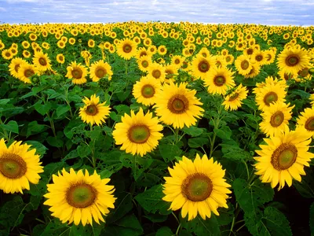
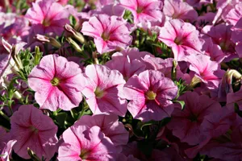
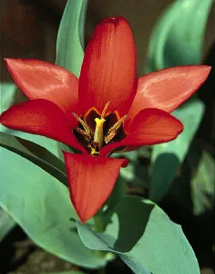

Basically, each flower consists of a floral axis upon which are borne the essential organs of reproduction (stamens and pistils) and usually accessory organs (sepals and petals); the latter may serve to both attract pollinating insects and protect the essential organs. The floral axis is a greatly modified stem; unlike vegetative stems, which bear leaves, it is usually contracted, so that the parts of the flower are crowded together on the stem tip, the receptacle. The flower parts are usually arrayed in whorls (or cycles) but may also be disposed spirally, especially if the axis is elongate. There are commonly four distinct whorls of flower parts: (1) an outer calyx consisting of sepals; within it lies (2) the corolla, consisting of petals; (3) the androecium, or group of stamens; and in the centre is (4) the gynoecium, consisting of the pistils.



pistil and stamens
pistil and stamens
The sepals and petals together make up the perianth, or floral envelope. The sepals are usually greenish and often resemble reduced leaves, while the petals are usually colourful and showy. Sepals and petals that are indistinguishable, as in lilies and tulips, are sometimes referred to as tepals. The androecium, or male parts of the flower, comprise the stamens, each of which consists of a supporting filament and an anther, in which pollen is produced. The gynoecium, or female parts of the flower, comprises one or more pistils, each of which consists of an ovary, with an upright extension, the style, on the top of which rests the stigma, the pollen-receptive surface. The ovary encloses the ovules, or potential seeds. A pistil may be simple, made up of a single carpel, or ovule-bearing modified leaf; or compound, formed from several carpels joined together.
perfect flower
perfect flower
A flower having sepals, petals, stamens, and pistils is complete; lacking one or more of such structures, it is said to be incomplete. Stamens and pistils are not present together in all flowers. When both are present the flower is said to be perfect, or bisexual, regardless of a lack of any other part that renders it incomplete (see photograph). A flower that lacks stamens is pistillate, or female, while one that lacks pistils is said to be staminate, or male. When the same plant bears unisexual flowers of both sexes, it is said to be monoecious (e.g., tuberous begonia, hazel, oak, corn); when the male and female flowers are on different plants, the plant is dioecious (e.g., date, holly, cottonwood, willow); when there are male, female, and bisexual flowers on the same plant, the plant is termed polygamous.
Compare the Rafflesia arnoldii's massive bloom with Amorphophallus titanum's towering inflorescence
Compare the Rafflesia arnoldii's massive bloom with Amorphophallus titanum's towering inflorescenceSee all videos for this article
treasure flower
treasure flower
orchid symmetry
orchid symmetry
A flower may be radially symmetrical (see photograph), as in roses and petunias, in which case it is termed regular or actinomorphic. A bilaterally symmetrical flower, as in orchids (see photograph) and snapdragons, is irregular or zygomorphic.
Flowers have been symbols of beauty in most civilizations of the world, and flower giving is still among the most popular of social amenities. As gifts, flowers serve as expressions of affection for spouses, other family members, and friends; as decorations at weddings and other ceremonies; as tokens of respect for the deceased; as cheering gifts to the bedridden; and as expressions of thanks or appreciation. Most flowers bought by the public are grown in commercial greenhouses or horticultural fields and then sold through wholesalers to retail florists. See also articles on individual flowers (e.g., carnation; lotus; petunia; rose; tulip).